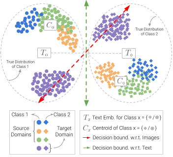
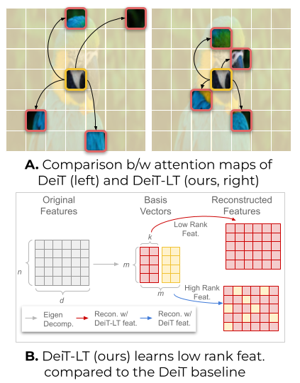
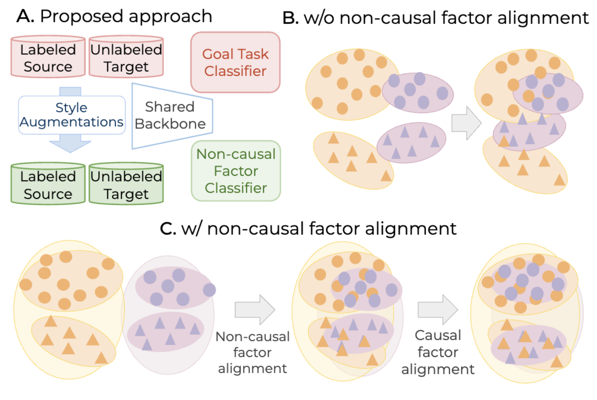
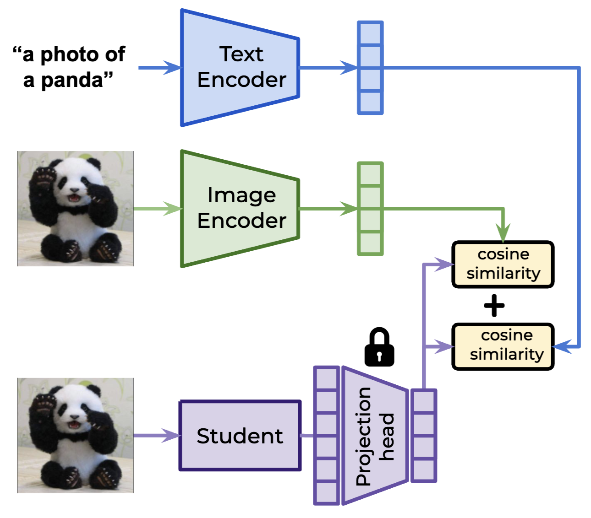

Ashish Ramayee Asokan
I am a Founding Member of Technical Staff at Imbik AI, working on post-training for agents. I completed my MS in Machine Learning at Carnegie Mellon University (CMU), advised by Fernando De la Torre and closely collaborating with Raviteja Vemulapalli and Oncel Tuzel from Apple MLR. Before that, I was a Predoctoral Fellow at the Indian Institute of Science, advised by R. Venkatesh Babu.
My research examines how to rigorously characterize what changes between model versions, and how frontier model capabilities can be transferred to smaller, more accessible models — with the goal of making powerful models more accessible and their development more transparent.
State-of-the-art models offer remarkable capabilities, but their deployment is constrained by computational cost and API-only access. I study how much of a frontier model's capability can be recovered through distillation — examining the data regimes, query strategies, and training objectives that make knowledge transfer most effective.
Benchmark scores provide an incomplete account of how models change across training runs or releases. I am developing systematic tools for model comparison — frameworks that surface meaningful behavioral differences, track capability shifts, and assess compatibility across a model family over time.
Models that perform well in-distribution frequently degrade when deployed under domain shift. My prior work addresses this through transformer-based methods for source-free domain adaptation, vision-language supervision for cross-domain generalization, and training strategies for long-tail visual recognition.
- Designed a framework for model diffing — discovering divergent behaviors between foundation models.
- Used model diffing to investigate gains and regressions in LLM-as-a-judge evaluation results across model versions.
- Research on domain generalization and vision-language models (CVPRW '23, CVPR '24), long-tail learning (CVPR '24), domain adaptation (ICCV '23, WACV '24), and federated learning.
- Led a collaboration with Boeing, Wipro, & HCL to build an airport analytics system for vehicle collision detection, aircraft classification, and activity recognition from surveillance feeds.
- Supervised and mentored 3 undergraduate interns across multiple research projects.
* Equal contribution





- Ranked in the top 3% (30/975) of the CS Department.
- Coursework: Linear Algebra, Intro to ML, Topics in Deep Learning, Information Retrieval.
-
Outstanding Reviewer — Top 2%CVPR & ECCV 2024
-
Kotak IISc AI-ML Pre-Doctoral FellowshipCompetitive research fellowship to work at the Vision and AI LabIndian Institute of Science, 2023
-
Prof. CNR Rao Merit Scholarship — Top 2%PES University
-
Prof. MRD Merit Scholarship — Top 20%PES University